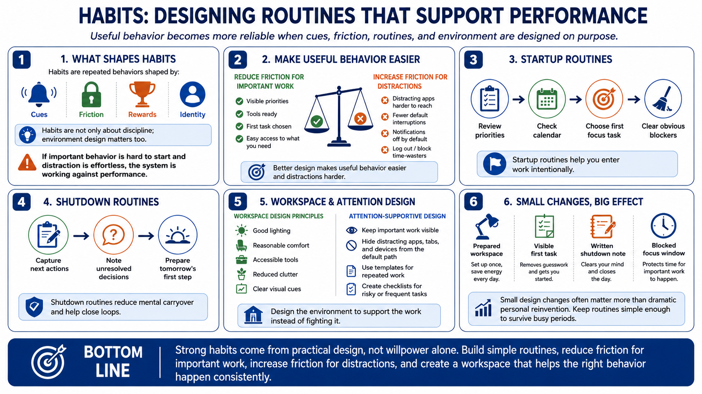

Habits, Routines, and Environment Design
Connecting to LMS... Progress: in progress

Narration
Habits are repeated behaviors shaped by cues, friction, rewards, and identity. People often describe habits as discipline, but environment design is just as important. If the important behavior is hard to start and the distracting behavior is effortless, the system is working against performance. Better design makes useful behavior easier and distractions harder.
Startup routines help people enter work intentionally. A simple start might include reviewing priorities, checking the calendar, choosing the first focus task, and clearing obvious blockers. Shutdown routines help close loops at the end of a work period. Capturing next actions, noting unresolved decisions, and preparing tomorrow's first step can reduce mental carryover.
Workspace setup matters in a general, practical sense. The environment should support the kind of work being done. Good lighting, reasonable comfort, accessible tools, reduced clutter, and clear visual cues can lower friction. Ergonomic concerns should be handled carefully and with qualified guidance when needed, but the basic principle is simple: do not make the body and environment fight the task.
Environment design can also manage attention. Put the important work where it is visible. Keep distracting apps, tabs, devices, or shortcuts out of the default path. Use templates for repeated work. Create checklists for risky or frequent tasks. The best routine is not the most elaborate one. It is the one that reliably helps the right behavior happen.
Small design changes often matter more than dramatic personal reinvention. A prepared workspace, a visible first task, a written shutdown note, or a blocked focus window can change the default path of the day. Performance routines should be simple enough to survive busy periods, because that is when they are needed most.